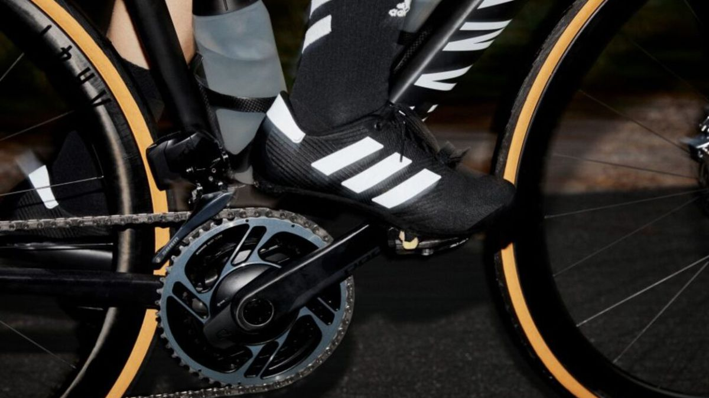

La firma alemana Adidas anunció su regreso al ciclismo 15 años después con 'The Road Shoe', una zapatilla pensada para todo tipo de ciclistas.
También hay espacio para la moda en el ciclismo. Por ejemplo, uno de los temas más comentados en el pasado Giro de Italia fue el díscolo maillot del Education First. Ahora, la prestigiosa marca de ropa deportiva Adidas ha anunciado que volverá a producir calzado para el pelotón tras 15 años de ausencia.
Que una marca de la dimensión de Adidas abrace de nuevo el ciclismo es una gran noticia para el deporte. La firma alemana calzó nada más y nada menos que a Eddy Merckx durante la carrera del belga, pero ahora Adidas no buscará atrapar a las estrellas del pelotón. Su nueva zapatilla, llamada 'The Road Shoe', pretende mejorar la accesibilidad al ciclismo y permitir que más atletas se "enganchen con la última tecnología". Su diseño apuesta por la simplicidad. Fondo negro, con las tres icónicas franjas presentes en blanco y, eso sí, con cordones. La parte superior olvida el cuero y apuesta por 'Primegreen', de material reciclado en su totalidad y con reflectantes en el talón. La suela estará creada con elementos de fibra de vidrio añadidos para proporcionar rigidez y es compatible con tacos de tres tornillos. Según reza la propia marca alemana en un comunicado, el objetivo de 'The Road Shoe' es "satisfacer las necesidades de una generación joven y floreciente de ciclistas que no solo están motivados por la búsqueda de un rendimiento de élite, sino también por el deseo de aventura, una mejor salud y la capacidad de entrar y salir de sus ciudades de forma sostenible y flexible". El 1 de diciembre es la fecha marcada para el regreso de Adidas al ciclismo, y las zapatillas podrán adquirirse desde ese día por unos 145 euros.